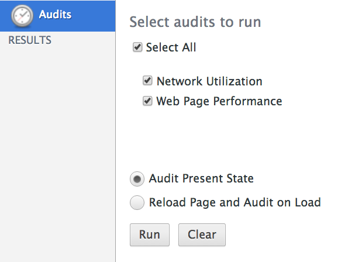
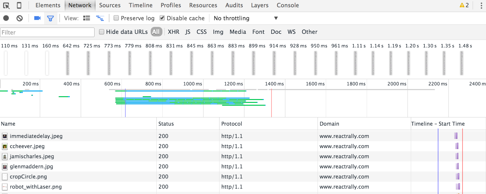
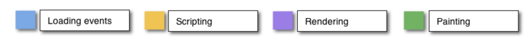
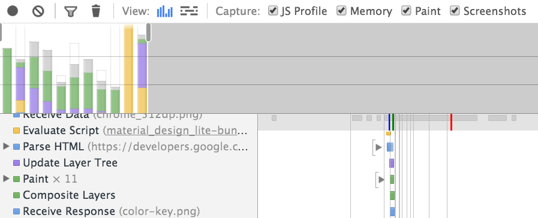
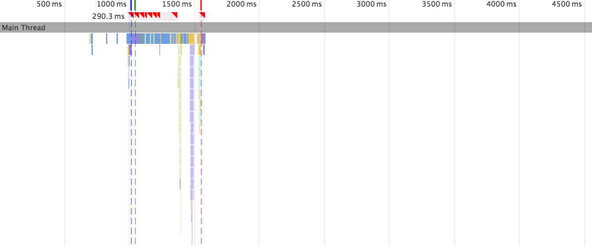
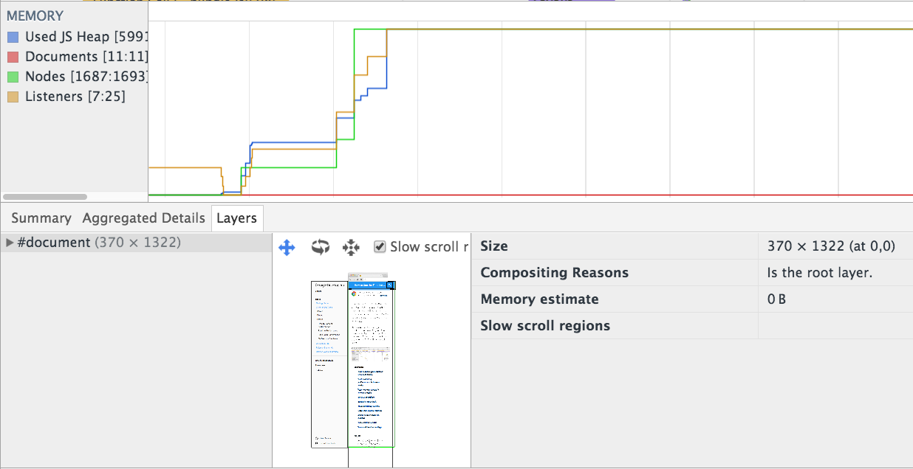
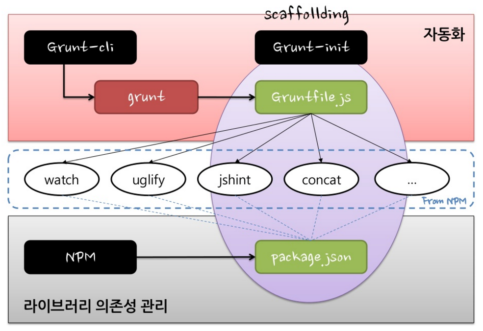
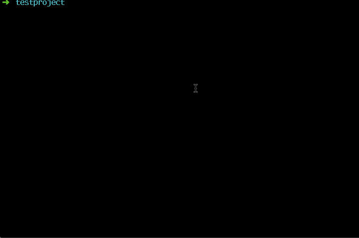
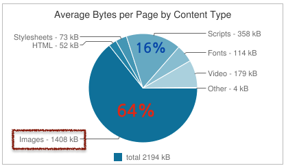
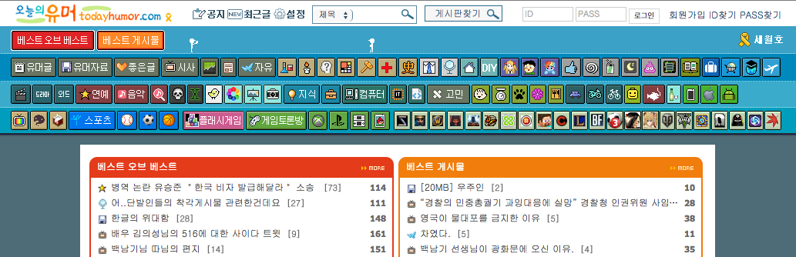

Front-End
성능 개선 쉽게 하기
Created by 손찬욱 / chanuk.son
Front End 성능 개선이란?
Waterfall chart를 어떻게 개선할 것인가?

Waterfall chart를 어떻게 개선할 것인가?

성능 개선 전략
1. 목표 설정

Wifi 환경에서 로딩속도 1초!!!
2. 개선 작업
“What you can measure, you can optimize”

측정
분석
최적화
적용
측정 -> 분석 -> 최적화 -> 적용 -> 측정 -> 분석 -> 최적화 -> 적용 -> 측정 -> 분석 -> 최적화 -> 적용 ...
3. 지속적인 관심
측정, 분석하기
성능 지표 측정 시스템
서비스는 항상 외부망에 있지만은 않는다...
개발환경에서 부터 확인할 순 없을까?
Chrome DevTool
Network
Rendering

Compute
Audits 패널
사이트 검사
https://developers.google.com/speed/pagespeed/insights/ Network 패널
시간별 HTTP Request - waterfall chart
screenshot
Timeline 패널
브라우저 동작 상태를 확인할수 있다
1. FrameView
프레임 단위별 확인
2. Frame Chart View
thread별 stack
3. Memory / Layer / ...
메모리 사용 내역와 레이어 상태
최적화, 적용하기
정적 파일 Merge, Minification, Obfuscation...
CSS Sprite, 이미지 최적화, 랜더링 최적화..., etc...
귀찮은데....
좀 알아서 되게 하면 안되나?
The JavaScript Task Runner
Grunt를 왜 사용해야하나?
- 1. Descriptive Language
- 2. Programming
- 3. Plugin
최소의 노력으로, 어떤 것이든, 자동화 할수 있다
Grunt 구조
Grunt 사용을 위한 준비
- node 설치 https://nodejs.org/en/
- grunt-cli 설치
npm install grunt-cli -g
Gruntfile.js
- Depth1 : Task, property
- Depth2 : Target, options
grunt.initConfig({
// task
task : {
// option of all target
options : {},
// target
foo : {
// option of target
options : {}
// src와 dest
src : [ "src/**/*.js", "src/**/*.json" ],
dest : "dest/dest.js"
},
bar : {
"dest" : "source"
},
zoo : {
files: [{
expand: true,
src: "<%= task.foo.dest %>",
dest: "<%= pkg.workspace %>/css"
}]
}
},
// property
pkg : grunt.file.readJSON("package.json")
});
grunt.loadNpmTasks("task"); // load task
grunt.registerTask("default", []); // register task
Grunt 맛보기
정적 파일 최적화 하기
- JavaScript
- CSS
- HTML
Minification 과 Obfuscation 적용
- JavaScript : Minification,Obfuscation
- CSS : Minification
- HTML : Minification
Grunt Plugin (uglify, cssmin, htmlmin)
https://github.com/gruntjs/grunt-contrib-uglify
최적화 하기 전에는 꼭! 정적 체크가 필요함
여러개의 정적파일이 존재함
Grunt Plugin 활용
js 정적검사 grunt-contrib-jshint
css 정적검사 grunt-contrib-csslint
js, css 파일머지 grunt-contrib-concat
js minify & Obfuscation grunt-contrib-uglify
css minify grunt-contrib-cssmin
html minify grunt-contrib-htmlmin
정적 파일 최적화 적용 데모
grunt jshint csslint concat uglify cssmin htmlmin
이미지 최적화 하기
httparchive
CSS Sprite
network 비용도 줄이고, 이미지 용량도 줄이자
 http://www.todayhumor.co.krbackground-image/position을 이용한 CSS Sprite
#nav li a { background-image:url("image_nav.gif"); }
#nav li a.item1 { background-position: 0px 0px; }
#nav li a.item2 { background-position: -72px 0px; }
#nav li a.item3 { background-position: -144px 0px; }
grunt-spritesmith
고퀄리티 이미지
다양한 디스플레이 크기... 그리고 레티나
반응형 이미지를 이용한
이미지 최적화
grunt-responsive-images
Grunt Plugin 활용
- CSS Sprite grunt-spritesmith
- 반응형 이미지 grunt-responsive-images
- 이미지 최적화 grunt-contrib-imagemin
이미지 최적화 적용 데모
grunt sprite responsive_images imagemin
성능 개선 전략
- 분석, 측정 - Chrome DevTool
Audits, Network, Timeline - 최적화, 적용 - Grunt
정적파일 최적화, 이미지 최적화 - 지속 적인 관심
Grunt Plugin
- js 정적검사 grunt-contrib-jshint
- css 정적검사 grunt-contrib-csslint
- js, css 파일머지 grunt-contrib-concat
- js minify & Obfuscation grunt-contrib-uglify
- css minify grunt-contrib-cssmin
- html minify grunt-contrib-htmlmin
- css Sprite grunt-spritesmith
- 반응형 이미지 grunt-responsive-images
- 이미지 최적화 grunt-contrib-imagemin